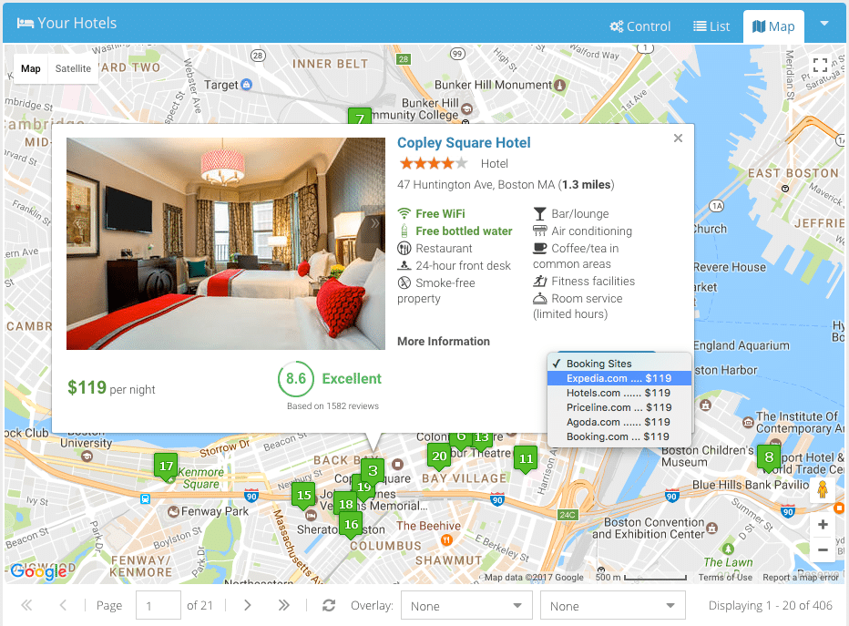
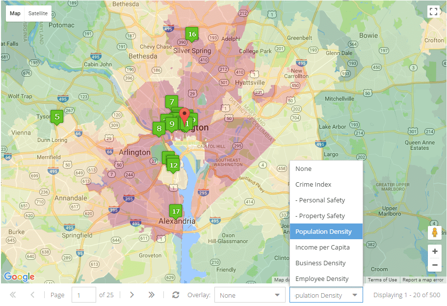
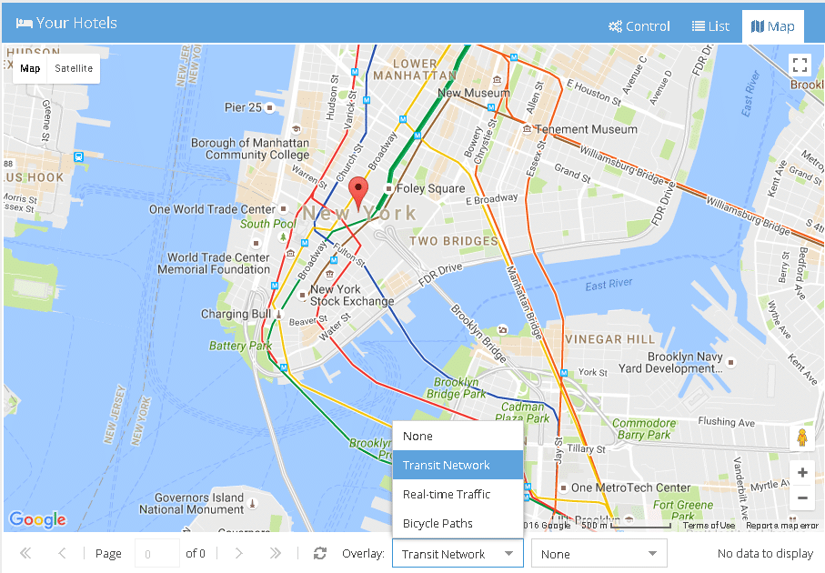
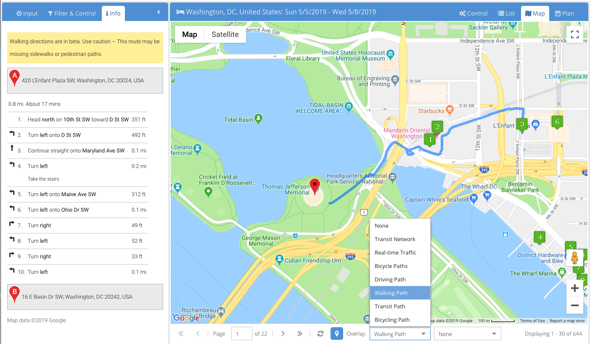

酒店周边的信息热图
不同于其它搜索网站，寻优网在地图上面提供了包括安全指数、人口密度、人均收入、公司分布、地铁网络、实时交通及自行车道的多个信息层面。在地图的低端有一个工具条，上面有两个下拉框。安全指数和统计信息位于右面的下拉框中。如果您从中选中一项，反应该项参数的信息热图就会显示在地图上。信息热图使用从绿到红的填充色来表达信息级别。对于安全指数，绿色代表安全而红色代表犯罪率高。对于其它统计信息或经济指数，红色代表数值高，绿色代表数值低。
左面的下拉框包含对您旅行有帮助的更多信息。如果您需要乘坐地铁，您可以选择地铁网络(Transit Network)来显示地铁线路图。如果您关心酒店到机场是否堵车，您可以选择实时交通(Real-time Traffic)来查看哪里最容易发生堵塞。最后，您还可以选择自行车道(Bicycle Paths)来看一看哪里可以骑自行车游玩。
酒店到目的地的具体路径

如果您的旅行目的是参加一个会议或是参观一个景点，那么您一定希望查找会议地点或景点旁边的酒店。寻优网允许您输入目的地具体地址，然后返回您目的地周边的酒店。这时您一定想看一看酒店离目的地有多近，如何能步行、开车或是乘坐公共交通工具到达。寻优网提供了一个便捷的方式在地图上显示酒店到您目的地的具体路径。首先，您可以在地图下端的工具条上选择“驾车路径”、“步行路径”、“公共交通”或“自行车路径”。然后，当您点击每一个酒店的标号，一条到达目的地的路径就会显示在地图上。同时，详细的行走步骤也会显示在左侧的信息面板上。